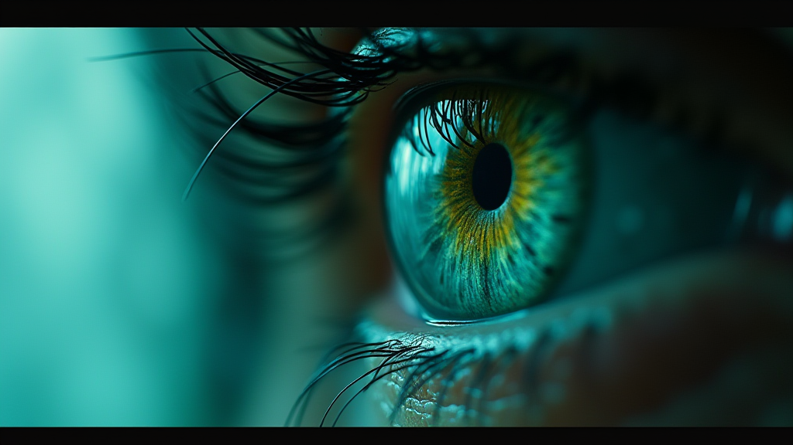

ORION — локальная AI-платформа для диалога, генерации медиа и lip-sync. Всё работает на вашем компьютере.
Никаких облаков. Никаких серверов. Никаких утечек данных.

Четыре модуля в одном приложении. Каждый работает локально.
Живое общение с локальным LLM. Самосознание, память, самообучение.
От идеи до готового MP4 одной кнопкой. Сценарий, раскадровка, рендер, анимация.
Генерация кода с безопасным запуском. Slash-команды, мульти-файлы, FIM.
Генерация изображений, видео, lip-sync и анимации лиц.
Речевой ввод и вывод в реальном времени. Несколько TTS-движков.
ORION знает кто он, что умеет, и учится на каждом диалоге.
Кадры, сгенерированные через ATELIER pipeline (SDXL + LTX-Video)
ORION работает на Mac с Apple Silicon
Платите один раз — пользуетесь вечно.
После пробного периода активируйте Pro-ключ в приложении
Краткие мануалы по каждому модулю ORION
Живой диалог с локальным AI. ORION не просто отвечает — он запоминает, учится и развивает личность.
По умолчанию: qwen2.5:7b. Для 32 GB+ RAM: qwen2.5:32b.
Одна фраза → готовый видеоролик. Пять AI-агентов работают автоматически.
ComfyUI + SDXL чекпоинт. Для видео: LTX-Video модель.
AI-агент, превращающий идею в структурированный сценарий. Работает локально — без интернета.
Вкладка «ATELIER» → «Только сценарий» или «Полный цикл».
AI-кодер: генерирует, проверяет и запускает код. Потоковый режим, подсветка синтаксиса.
Изолированный sandbox. Авто-fix при ошибке. Мульти-файловая генерация.
Изображения, видео и lip-sync — всё локально на вашем Mac.
Говорите с ORION без клавиатуры. Речевой ввод + синтез речи.
Распознавание речи работает офлайн.
ORION — не просто LLM. Он имеет имя, характер и память. Учится на каждом диалоге.
Периодически анализирует себя: что получилось, что нет, какие паттерны. Корректирует поведение.
ORION — живой проект. Я ищу единомышленников чтобы довести его до совершенства.
Python, PyTorch, PySide6, ComfyUI, LatentSync — есть где разгуляться. Архитектура модульная, код чистый.
Тестирование пайплайнов, новые стили генерации, сценарии для ATELIER. Ваш визуальный опыт бесценен.
Концепции, UX, продукт-видение. ORION должен стать лучшей локальной AI-студией — помогите ему.